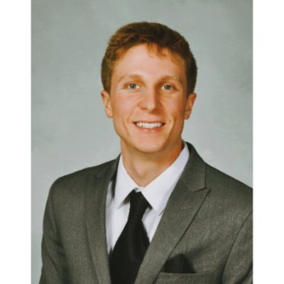

About Me
Jordan Isenberg is currently an Analyst at Integis in Cleveland, OH. Integis is the leading retained search firm focused exclusively on private equity firms and their middle market portfolio companies. At Integis, we recruit high-impact: portfolio company CEOs, CFOs, revenue leaders, and other strategically critical portfolio company leaders who are ideally suited to drive value creation. Everything we do is grounded in our mission of improving MOIC for investors and stakeholders.
To develop additional skills, Jordan begins a 24-week coding program through Case Western Reserve University in October of 2017. There he will build a portfolio of web applications, learning HTML5, CSS3, JavaScript, Java, MySQL, Command Line, Git, and more. In addition to Integis, Jordan serves as a Consultant for Nervive, a medical device company in Akron, OH. Nervive is developing the VitalFlow Stimulator, a non-invasive platform technology that can treat conditions of brain ischemia such as cerebral artery vasospasm, ischemic stroke, and traumatic brain injury.
Jordan grew up in Shaker Heights, OH, a suburb of Cleveland, OH. He attended Shaker Heights High School, where he was a member of the band and the varsity soccer team. Additionally, he was a national merit commended scholar and VEX Robotics Regional Champion. After high school, Jordan attended Cornell University and majored in Economics. He was a member of Kappa Sigma and Alpha Phi Omega. During his junior year, Jordan completed an externship with a boutique investment bank in Las Vegas, gathering wide deal exposure across all three PE, Private Placement, and RIA divisions. The following summer, Jordan interned at BioEnterprise in Clevaland, OH. He drafted business materials for early-stage medical device and health IT companies. His work included market analyses, prospect lists, grant submissions, initial reviews, and financial modeling.
Connect with Me